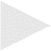

Organised by CAS in association with FLUX Events and other arts organisations.
The computer Arts Society was founded in 1968. The three founder members of the Society – Alan Sutcliffe, George Mallen, and John Lansdown – had been involved with computing and its related concepts for some time. They knew Jasia Reichardt, the curator of Cybernetic Serendipity (1968) and had participated in or advised on aspects of the exhibition. Sutcliffe was involved with the exhibition through his collaboration with composer Peter Zinovieff and Electronic Music Studios (EMS). Mallen was working with the English cybernetician Gordon Pask at Systems Research and assisted on the production of the interactive robotic work Colloquy of Mobiles shown at the exhibition. Sutcliffe brought the paper tape of a music program he had written at ICL to Zinovieff to “realise” and thus began their collaboration, with Sutcliffe assisting the Studio by writing software for the synthesizers they produced. Zinovieff is recognised as having revolutionised electronic and avant-garde music and EMS was used by Sir Harrison Birtwistle, Stockhausen and Pink Floyd among others. In 1969, the Computer Arts Society organised their first public exhibition at the Royal College of Art naming the show Event One.
CAS chairman, Nick Lambert and Graham Diprose decided to celebrate 50 years of the society with a return to the RCA to present Event Two from the 12th – 17th July 2019. Event Two has been organised through a newly emergent network connecting the RCA, CAS, Lumen Art Projects and FLUX Events, research collaborations with the Electronic Visualisation and the Arts conference (EVA) in London and Leicester-based arts organisation Interact Digital Arts. The exhibition and related events reflect upon the 50 years since Event One surveying the impact and legacies of early computer art, and engaging critical questions on the historical evolution of technology and creative practices with computation.

The FLUX Events' selection features an array of creative practices including computation, digital media and new technologies such as VR, AI, EEG technologies, real-time data visualisation and live body-mapping. I am now a member FLUX but when I began my practice in 1970, very few artists had access to computers and instead my interests were in kinetic and light art. During the early 80s while researching new methods for creating light sculpture, I invented a remarkable way to create lightforms that appear translucent and weightless by combining skilful lighting of waves on a rapidly moving string.
The phase structure of the waveforms is revealed by changing the colour of illumination at high speed, much faster than the eye can see. Instead the eye perceives multiple colours highlighting different parts of the waveforms through the persistence of vision which appears to turn a single fast moving string into a complex volumetric display.

While early versions of the special light sources, called chromastrobic lights could only change in a limited range of patterns, with the advent of high power LEDs complex colour changes became possible. By this point in the early noughties, I had taught myself to code and working in collaboration with electronic engineer, Louis Norwood, developed a fully programmable chromastrobic light. The LEDs, although they are standard, require special driver circuits to allow them to be modulated, changing their brightness and apparent colour at up to 10,000 times per second.

Undulation, the light sculpture chosen for EVENT TWO was first exhibited at The Isaac Newton Institute for Mathematical Sciences at Cambridge University. The institute organised a series of workshops on Growth, Form and Self-organisation in 2017 and invited 10 artists to participate. For me it was a particularly curious experience as I had grown up in Cambridge where my father was a mathematician in the Department of Mathematics and Theoretical Physics. I realised how the subject has evolved over the years and people are now working on problems that would once have been considered impossible or perhaps frivolous. There is no mathematical theory that accounts for the complex wave patterns I discovered on a spinning string, the problem remains an unsolved wonder to contemplate.
The work shown at EVENT TWO is slightly different from the piece shown in Cambridge, adding an interactive touchscreen display that allows visitors to select the colours on the waveforms using the Artist’s control software.
|  | |||
|
|
|
|